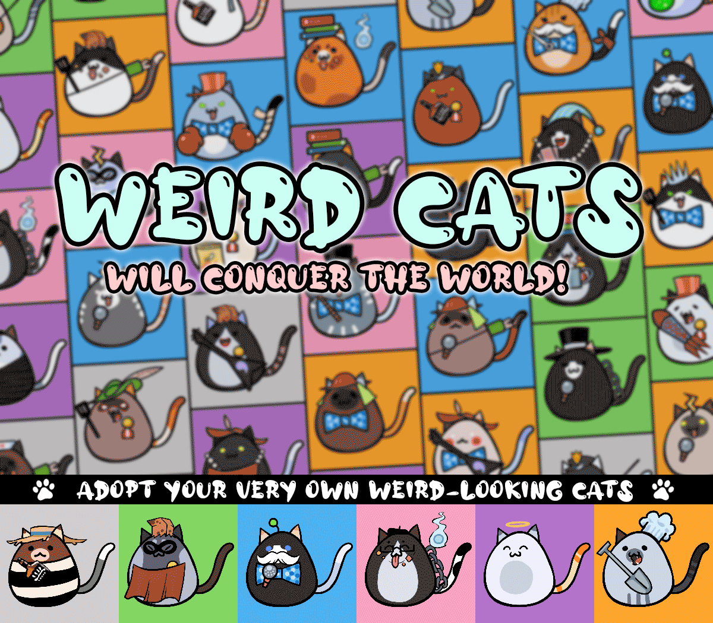

CATEARMY
Catearmy is a community formed around the Catecoin project. Holders with a strong belief in the Catecoin are part of the Catecoin army.
This website was created to unite Catearmy and help Catecoin become more popular and accessible to the masses.
We will also create burn activities for Catecoin and Catpay tokens to make them more valuable, which will help their price reach greater heights.
Catecoin to the Moon!
- Catearmy
CATEARMY NFT
WEIRD CATS
Weird-looking cats formed an army to live in a world where dogs predominated. Now that their number continues to grow, the cats have a chance to fight back and conquer the world! Adopt your very own weird-looking cats and join our community. Let's take over the world by adopting 10,000 unique Weird Cat soldiers!
Weird Cats was created with the aim of buying back and burning Catecoin tokens with the profit this collection can earn. It also aims to help Catecoin gain new audiences from other platforms.
The community can also trade their Minted NFTs at OpenSea, where they can gain profit.
MINTING COST : 0.0035BNB (CURRENT)
NEXT MINT #5001-10,000 COST : 0.008BNB
You can now help with burning Catecoins with your spare BNB.
VISIT CATEARMY AND MIXED CATS AT:
| Opensea.io | Twitter.com |

AS SEEN ON: